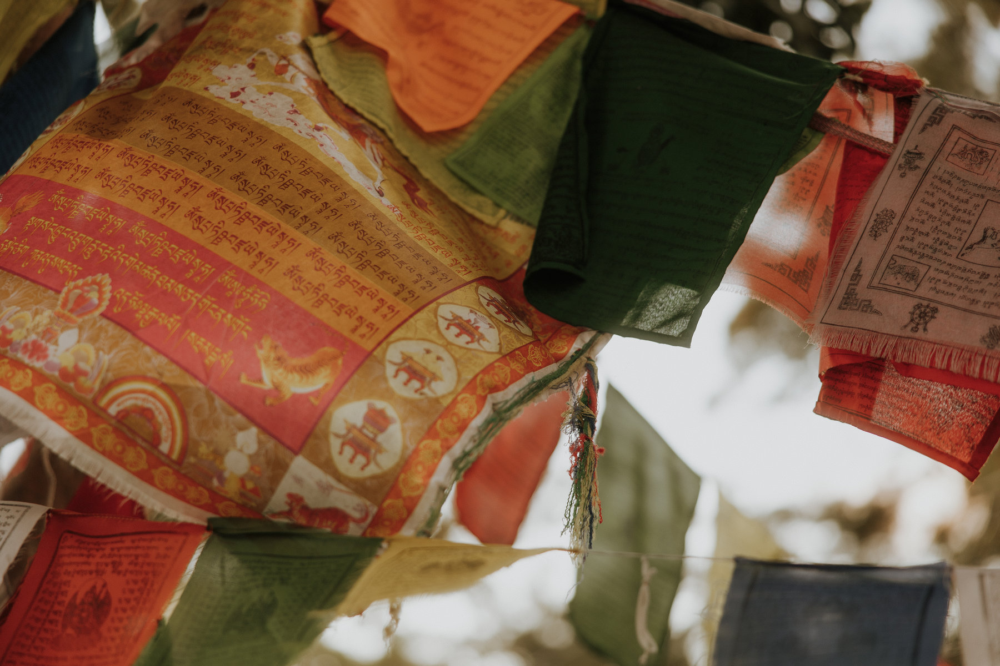
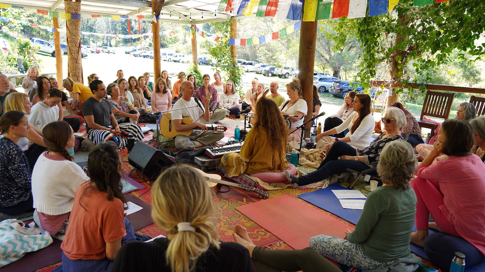
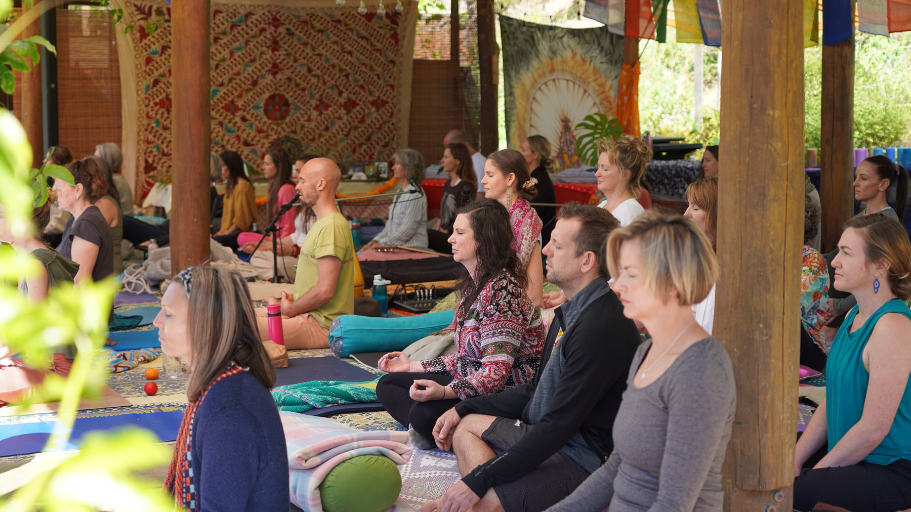
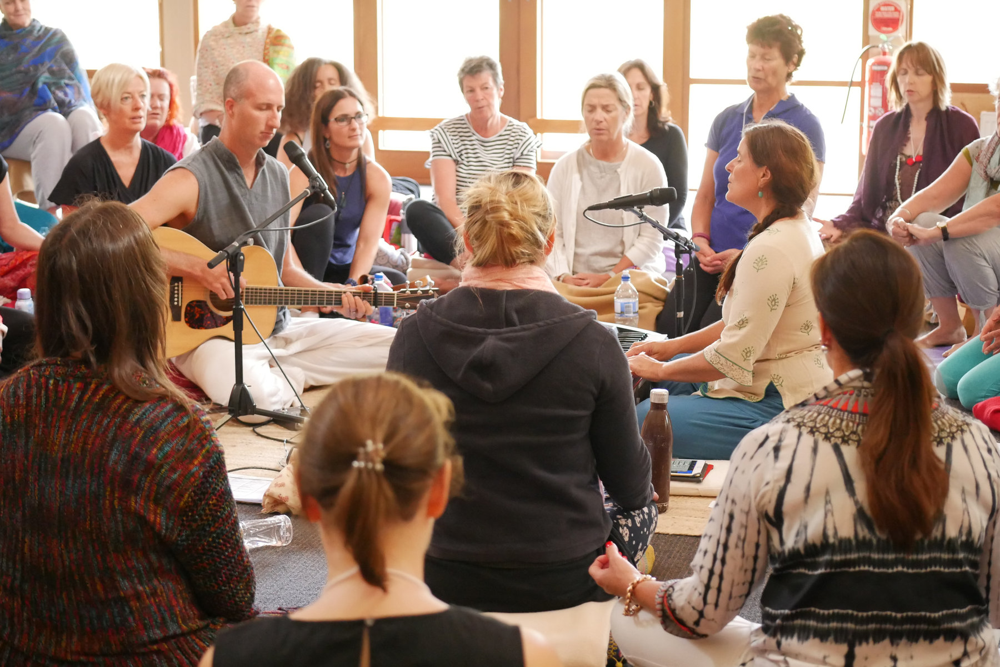
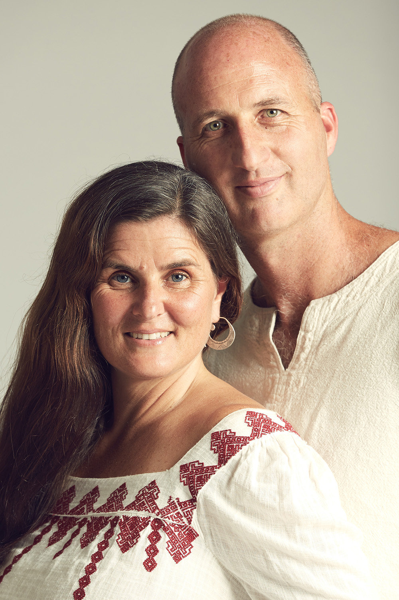

Sacred Earth · 16 Week Program
A 16 week journey of mantra, meditation & movement
2 Feb – 18 May 2027
On our sanctuary property · Sunshine Coast
Limited to 30 places · Payment plans available
The invitation
A 16-week immersive journey designed to enrich your daily life through the transformative practices of movement, meditation and mantra singing.
Meeting once a week, we come together to learn, practise, share and deepen our understanding of these ancient traditions — and to discover how to weave them into the rhythm of everyday life.
This journey invites you to slow down, turn inward and nurture a meaningful relationship with your inner world. Through weekly gatherings, dedicated practice and self-exploration, you'll develop practical tools to cultivate greater clarity, awareness and inner peace.
More than something we do in a class, these practices can become a way of living — supporting us through the challenges and beauty of everyday life.
Over 16 weeks
Practical tools for meditation, mantra and movement that fit into the rhythm of your everyday life.
Greater awareness of the nature of the mind, and a steadier, quieter centre to return to.
A deeper sense of purpose, balance and contentment — and a clearer connection to your life's purpose.
Through sacred chanting, movement and positive living, find your voice and express it freely.
Draw inspiration from the collective energy of the group each week — devotion, laughter and authentic connection.
An invitation to embody the practices and live in a more conscious, connected and meaningful way.




Each week offers an opportunity to reconnect, deepen your practice and bring what you learn into your daily life.

Your guides
Sacred Earth are Australia's internationally acclaimed mantra artists. Penny's soaring vocals and ethereal keyboard melodies meet Jethro's harmonies and instruments — shakuhachi, Indian bansuri, Irish whistles and acoustic guitar.
For over two decades they have been refining their contemporary expression of the ancient practice of chanting mantras and prayers from the East, and sharing it with audiences around the world.
Journey Into Stillness is held on the sanctuary of their own property on the Sunshine Coast.
“When we gather in the spirit of peace and share our hearts through sacred music, all distractions fade away; only silence remains.” Penny & Jethro · Sacred Earth
Secure your place
$1600
$250 deposit secures your place · Payment plans available on request
Limited to 30 places.
Once a week for 16 weeks, from 2 February to 18 May 2027.
On the sanctuary of Penny and Jethro's property on the Sunshine Coast, Queensland.
The full program is $1600. A $250 deposit secures your place, and payment plans are available on request.
No. The program is designed for you to learn and deepen these practices week by week, whatever your starting point.
The group is limited to 30 places.
We'd love to hear from you. Contact Sacred Earth.
A journey of coming home to yourself.
Secure your place ⟶